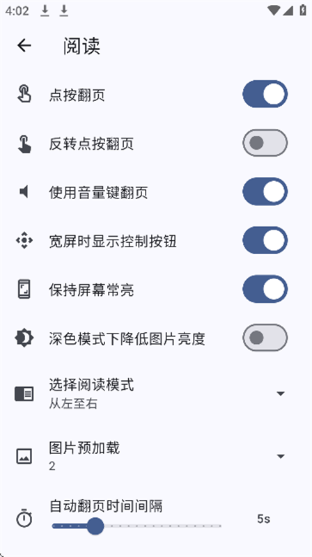

PicaComic 到底怎么用？一篇快问快答讲清楚
整理一篇关于 PicaComic 的快问快答，覆盖它是什么、谁适合、怎么装、自定义漫画源、下载常见坑、值不值得长期留。
整理一篇关于 PicaComic 的快问快答——如果你第一次接触这个漫画阅读器，或者用了一阵子还有疑问，这里该有的基本都齐了。
PicaComic 到底是什么？和普通漫画 App 有什么不一样？
一句话：这是一个多源聚合的漫画阅读器，它的官网上列了全部支持的源清单。本身不存漫画，而是把 PicACG、绅士漫画、e-hentai、exhentai、JmComic、Hitomi、nhentai 等十几个源的内容统一接到一个界面里。普通漫画 App 往往只对接一家，换源就得换软件；PicaComic 允许你同时启用多个源、在首页混合浏览，也可以一键切到单个源的分类体系里单独逛。
谁会用到它？纯看漫画的普通读者也值得装吗？
分两种情况。如果你只看一两家平台、内容也够，那用官方 App 更省事；但你要是逛的源比较杂，或者发现某些漫画在 A 站下架了、B 站还留着，PicaComic 就显得特别顺手。还有一类人是重度离线党——它的批量下载 + 多线程 + 断点续传做得相当扎实，下载完整章离线翻也不会卡顿。简单说：源越多、越爱攒书、越怕突然断更，越需要。
怎么装？手机和桌面都有吗？
Android 端最省心，从下载拿个最新版 APK 装就行，不需要 Google Play 全家桶。iOS 相对麻烦，因为 TestFlight 名额有限；如果想在苹果设备上用，通常得走 Sideload 或自签路线。桌面端更有意思——官方仓库归档但代码还在，Flutter 写的，Windows / macOS / Linux 都能自己编译。Windows 要 Visual Studio 2022 勾选 C++ 桌面开发，macOS 装完 Xcode 跑许可，Linux 先装 libgtk-3-dev 那一串 GTK 依赖，然后 flutter config --enable-xxx-desktop + flutter build xxx --release 就出产物。编译报错八成是 Flutter SDK 版本和 pubspec.yaml 对不上，查一下 environment 字段装对应版本就好。
自定义漫画源听起来很厉害？普通人能上手吗？
能上手，但得懂一点 JavaScript。官方有一份PicaComic文档把接口和示例写得很清楚。漫画源脚本本质上就是一段 JS，要实现三个核心接口：浏览（返回分类列表 + 某分类下的漫画列表）、详情（返回某部漫画的基本信息和章节列表）、阅读（返回某一章的图片 URL 数组）。可选接口还包括搜索、收藏、历史记录。不能直接用浏览器 fetch，所有网络请求必须走应用注入的 http.get / http.post / http.request——这样应用统一处理 Cookie、代理和 Cloudflare 验证，也保证漫画源在沙箱里不能乱动。调试也方便，有个 log() 接口直接打日志，桌面端 V4.0.2 还新增了本地文件日志，路径在设置里能找到，不用插调试桥。最简单的上手方式是先写浏览接口返回固定几条假数据，确认应用能正确显示列表，再一步步加详情和阅读。

下载是 PicaComic 的强项，但有哪些高频坑？
有，而且版本迭代一直在补。先说"下载完打不开"——V3.1.4 修了两个关键问题：一是大文件写入不完整，图片大时磁盘上实际只写了一半，阅读器翻到后半段就崩；二是扩展名检测错误，WebP 图片被保存成 .jpg，系统和阅读器都认不出来。再比如"下载目录改了但正在下的任务没跟着变"，也是 V3.1.4 修的。还有删除下载后磁盘文件残留的问题，V3.1.4 初修，V4.0.2 又补了一遍，现在应该干净了。遇到下载异常时，先确认版本是不是 V3.1.4+，然后检查网络、存储空间（建议至少留 500MB）、存储权限，手动重试一次不行就删掉重下。
e-hentai 系列的排行榜和随机板块为什么有时候加载不出来？
Eh 排行榜（日榜、周榜、月榜）和绅士漫画源的"随机板块查看更多"是两个独立功能，但都在 V3.1.4 一起修了。之前的问题包括排行榜页面空白、随机板块点"查看更多"没反应、内容不完整等。如果你还在旧版本，直接升级就行。另外分类屏蔽也值得提——绅士漫画源和部分自定义源支持屏蔽特定分类，屏蔽后这些内容不会再出现在浏览结果里；V4.0.2 专门修了禁漫漫画分类不能被屏蔽的 bug，现在所有源的分类屏蔽都统一生效。
和同类比一下？它的优势和短板在哪？
优势很明确：源多、聚合干净、离线体验扎实。多源统一界面 + 按源筛选浏览 + 分类屏蔽，这几点很少有同类做得这么稳。自定义漫画源的 JS 沙箱设计也很成熟，想加新源的自由度高。短板呢？首先是官方仓库已经归档了，虽然代码还能编译，但不会再有功能更新，新出的源可能需要社区自己维护脚本。其次桌面端虽然能编译，但体验还是 Android 端最顺滑，Linux 那边 GTK 依赖装起来也有点折腾。还有 iOS 端的限制，TestFlight 名额有限，自签路线对普通用户不友好。
值不值得长期留？
看你是不是重度多源用户。如果是，PicaComic 那种"一个 App 逛遍所有源、离线攒书、还能自己加新源"的体验是很难被替代的；如果只看一两家，倒也没非装不可。不过哪怕你现在源不多，留着当备胎也不亏——哪天你追的漫画突然从常逛的平台下架了，切到备用源就能续上，不会断更。
最后说句实在的：官方归档虽然意味着停止迭代，但也说明这个软件已经走到了一个相对稳定的状态，该补的坑基本都补了，跑个一年半载不会突然炸。真要加新功能或者接新源，社区那边也一直在维护自定义漫画源脚本。属于那种"装了就不想删"的实用派工具。
想进一步了解的话，完整资料在三个仓库都能拿到——GitHub、Gitee、GitCode 都同步了文档和脚本，国内访问 Gitee 和 GitCode 会更顺畅。